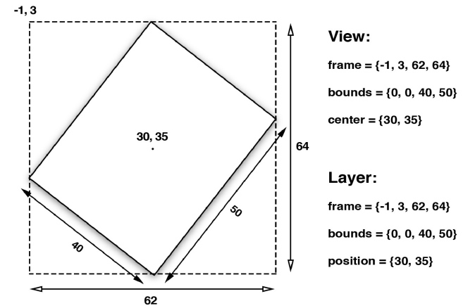
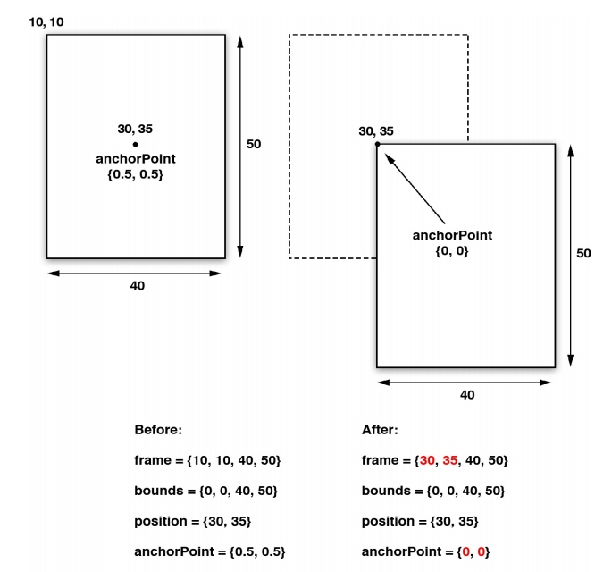
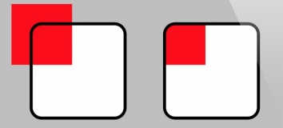
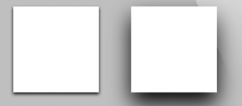
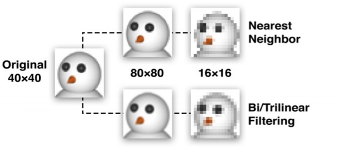
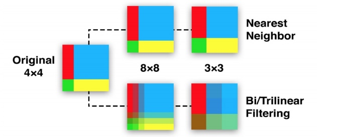

遗忘点:
1. 用作mask的layer不一定非要静态的,只要有layer的都可以作为蒙版
2.-hitTest:同样接受一个 CGPoint 类型参数,返回的是图层本身或者包含这个坐标点的叶子节点图层.如果这个点在最爱曾图层范围外,返回nil；我们常用这个方法获取点击位置的视图（判断点击在了哪个视图）
CALayer *layer = [self.layerView.layer hitTest:point];
图层几何学
布局
UIView布局属性:frame bounds center
与之对应
CALayer布局属性:frame bounds position
center和postion是一样的值，都代表了相对于父图层 anchorPoint 所在的位置
视图的布局属性仅仅是存取方法，对其进行改变其实是改变视图下方CALayer的frame
视图或者图层的frame是根据其bounds，position和transform计算而来的，其中任意一值发生改变都会导致其frame改变

锚点
视图的center属性和图层的position属性都指定了anchorPoint相对于父图层的位置。
anchorPoint是用来移动图层的把柄
默认anchorPoint是在图层的中心,这个属性UIView并没有暴露出来,这也是视图的position属性被叫做“center”的原因。但是图层的锚点可以移动，锚点的移动会导致frame的改变即位置改变

anchorPoint也是单位坐标，默认是{0.5，0.5}，可以通过指定大于或者小于1，使其在图层范围之外
改变anchorPoint常用于做不随着中心点做动画的动画使用,比如 时钟的表针旋转
注意
中心和锚点（即position或者center和anchorPoint没有任何关系），锚点的改变不会影响中心点位置，只会影响frame
坐标系转换
CALayer提供了转换坐标系的方法（视图也有）
- (CGPoint)convertPoint:(CGPoint)point fromLayer:(CALayer *)layer;
- (CGPoint)convertPoint:(CGPoint)point toLayer:(CALayer *)layer;
- (CGRect)convertRect:(CGRect)rect fromLayer:(CALayer *)layer;
- (CGRect)convertRect:(CGRect)rect toLayer:(CALayer *)layer;
Z坐标
UIView是二维坐标 而CALayer则是三维的
因此CALayer还有两个属性:zPosition anchorPointZ 在Z轴上描述图层位置的浮点类型
zPosition最实用的功能就是改变图层的显示顺序了，一般给图层增加1.f就可以控制显示顺序了
HIT Testing
CALayer并不关心任何响应链事件，所以不能直接处理触摸事件或者手势。但是它有一系列的方法帮你处理事件：-containsPoint:和-hitTest:。
-containsPoint: 接受一个在本图层坐标系吓得一个CGPoint，如果这个点在图层frame内就返回YES。注意必须将这个点转为每个图层坐标系下的坐标
-hitTest:同样接受一个 CGPoint 类型参数,返回的是图层本身或者包含这个坐标点的叶子节点图层.如果这个点在最爱曾图层范围外,返回nil；
//举个栗子
- (void)touchesBegan:(NSSet *)touches withEvent:(UIEvent *)event
{
//get touch position
CGPoint point = [[touches anyObject] locationInView:self.view];
//get touched layer
//获取这个点击的layer
CALayer *layer = [self.layerView.layer hitTest:point];
//get layer using hitTest
if (layer == self.blueLayer) {
[[[UIAlertView alloc] initWithTitle:@"Inside Blue Layer" message:nil delegate:nil cancelButtonTitle:@"OK" otherButtonTitles:nil] show];
} else if (layer == self.layerView.layer) {
[[[UIAlertView alloc] initWithTitle:@"Inside White Layer"
message:nil
delegate:nil
cancelButtonTitle:@"OK"
otherButtonTitles:nil] show];
}
}
注意
- 当调用图层的
-hitTest:方法时，测算的顺序严格依赖于图层树当中的图层顺序（和UIView处理事件类似）。之前提到的zPosition属性可以明显改变屏幕上图层的顺序，但不能改变事件传递的顺序。
- 这两个方法是layer的实例方法 我们可以直接用layer调用而不需要作为系统判断方法
自动布局
对于UIView如果想要自动布局我们可以使用UIViewAutoresizingMask 和NSLayoutConstraintAPI
CALayer没有自动布局办法
如果想要随意控制CALayer的布局，我们可以用CALayerDelegate方法:
- (void)layoutSublayersOfLayer:(CALayer *)layer;
/**当图层的 bounds 发生改变，或者图层的 -setNeedsLayout 方法被调用的时候，这个函数将会被执
行。（但是也没法做大自适应屏幕等自动布局,这也是为什么我们用UIView来布局）*/
视觉效果
圆角
CALayer有一个叫做conrnerRadius的属性控制着图层角的曲率。它是一个浮点数，默认为0（为0的时候就是直角）,默认这个值不影响背景图片或者子图层,但是如果设置maskToBounds为YES,图层中东西都会被截取.
图层边框
borderWidth和borderColor，这条线（stroke）沿着图层的bounds绘制,同时也包含图层的角.
borderWith以点为单位的浮点数
borderColor边框的颜色默认黑色,CGColorRef类型，不是UIColor所以不是Cocoa内置对象
// CGColorRef 属性即便是强引用也只能通过assign关键字来声明
@property(nullable) CGColorRef borderColor;
注意
- 边框是绘制在图层边界里面的，而且在所有子内容之前，也在子图层之前。（这个之前是显示最前而不是在最前绘制被遮盖）
- 边框是跟随图层的边界变化的，而不是图层里面的内容
-

阴影
shadowOpacity默认0。他是一个必须在0.0（不可见）和1.0（完全不透明）之间的浮点数。
阴影的另外三个属性:
shadowColor控制阴影的颜色，和 borderColor 和 backgroundColor 一样，它的类型也是 CGColorRef，默认黑色
shadowOffset阴影的方向和距离 CGSize类型，宽度为阴影横向位移，高度为纵向位移，默认{0,-3},即相对Y轴有3个点的向上位移
shadowRadius控制着阴影的模糊度，当它的值是0的时候，阴影就和视图一样有一个非常确定的边界线。我们推荐为大于0的值,值越大阴影越模糊,图层层次更明显.

阴影裁剪
与边框不同,图层的阴影继承自内容的外形，CoreAnimation会将寄宿图（包括子视图）来结合图层形状创建一个阴影。
但是由于他们的不同,我们在包括子图层创建阴影后,如果按照边框进行裁剪就会导致部分阴影没有了，这时候我们只能额外创建一个裁剪后的图层形状的阴影图层（可以作为最外层的父图层）来实现效果。
shadowPath属性
因为实时计算阴影是非常消耗资源的,我们可以通过事先指定shadowPath来提高性能.shadowPath是一个CGPathRef类型（一个指向CGPath的指针）。CGPath 是一个Core Graphics对象，用来指定任意的一个矢量图形。我们可以用这个属性在图层形状之外指定阴影形状.
举个栗子:
CGMutablePathRef squarePath = CGPathCreateMutable();
CGPathAddRect(squarePath, NULL, self.layerView1.bounds);
self.layerView1.layer.shadowPath = squarePath;
//需要我们手动释放
CGPathRelease(squarePath);
//create a circular shadow
CGMutablePathRef circlePath = CGPathCreateMutable();
CGPathAddEllipseInRect(circlePath, NULL, self.layerView2.bounds);
self.layerView2.layer.shadowPath = circlePath;
CGPathRelease(circlePath);
CGPath适合搭建比较简单的形状,比如举行或者圆,但是如果是复杂的图形推荐使用UIBezierPath，它是一个由UIKit提供的在CGPath基础上的Objective-C包装类
图层蒙版
CALayer的mask属性是一个CALayer类型,它类似于一个自图层，mask图层定义了父图层的可见区域。
mask图层的color没用,轮廓才是重要的。对于mask图层中的部分会保留下来,其他部分会被抛弃（对于视图View其实你可以看做其他部分还在只不过颜色为透明色,但是这部分还会拦截点击事件）
这个Mask不仅仅局限于静态图，任何有图层的构成都可以作为Mask，因此我们甚至可以用一个动画的layer作为蒙版.
拉伸过滤
这里牵涉到minificationFilter和magnificationFilter属性。
当图片需要显示不同大小的时候,这种拉伸算法就起到作用。它作用于原图的像素上并根据需要生成新的像素显示在屏幕上。
CALayer提供给我们三种拉伸过滤方法:
- kCAFilterLinear
- kCAFilterNearest
- kCAFilterTrilinear
minification（缩小图片）和magnification（放大图片）默认的过滤器都是kCAFilterLinear
kCAFilterLinear双线性滤波，大多数情况下表现良好，但是当放大倍数较大时会比较模糊不清
kCAFilterTrilinear和kCAFilterLinear很相似，是三线性滤波

kCAFilterNearest 最近过滤 ，就是取样最近的单像素点而不管其他的颜色。总的来说，对于比较小的图或者是差异特别明显，极少斜线的大图，最近过滤算法会保留这种差异明显的特质以呈现更好的结果。但是对于大多数的图尤其是有很多斜线或是曲线轮廓的图片来说，最近过滤算法会导致更差的结果。换句话说，线性过滤保留了形状，最近过滤则保留了像素的差异。

组透明
UIView用alpha属性设置透明度
CALayy用opacity设置图层透明度
这两个属性都是影响子层级的，比如我们设置一个图层透明度为50%，图层的每个像素都会一半显示自己的颜色，另一半显示图层下面的颜色。。但是如果图层包含一个同样显示50%透明的子图层时，你所看到的视图，50%来自子视图，25%来了图层本身的颜色，另外的25%则来自背景色。因此经常导致我们我们视图颜色的不协调。
这时候我们可以
方法一：
通过设置Info.plist文件中的 UIViewGroupOpacity为YES来达到这个效果，但是这个设置会影响到这个应用，整个app可能会受到不良影响。
方法二：（推荐）
设置CALayer的一个叫做shouldRasterize属性来实现组透明的效果，如果它被设置为YES，在应用透明度之前，图层及其子图层都会被整合成一个整体的图片，这样就没有透明度混合的问题了
为了启用shouldRasterize属性，我们设置了图层的rasterizationScale属性。默认情况下，所有图层拉伸都是1.0， 所以如果你使用了shouldRasterize属性，你就要确保你设置了 rasterizationScale 属性去匹配屏幕，以防止出现Retina屏幕像素化的问题。
button2.layer.shouldRasterize = YES;
button2.layer.rasterizationScale = [UIScreen mainScreen].scale;
注意
当shouldRasterize和UIViewGroupOpacity一起的时候，会出现性能问题（但是好像影响不大）